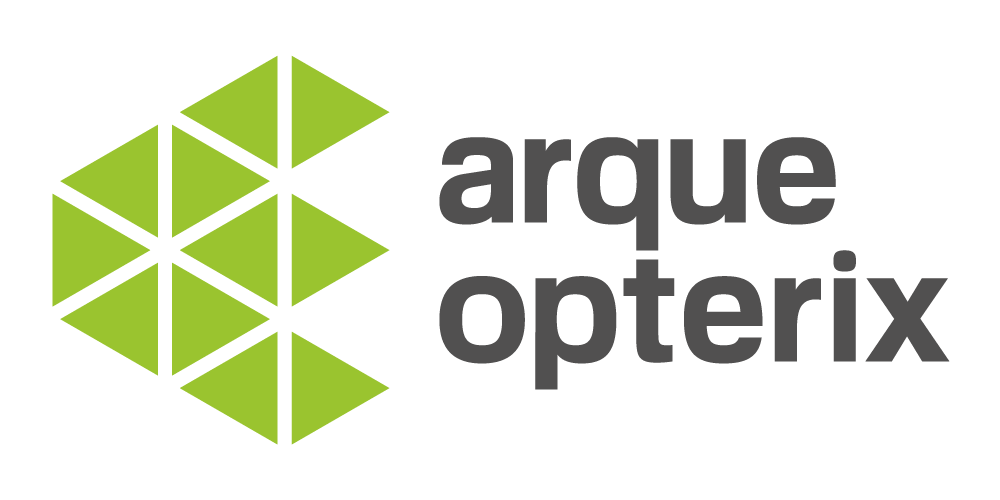

<link rel="import" href="../bower_components/polymer/polymer.html">

<dom-module id="lhe-info">

  <template>

    <style>
      :host {
        display: block;
        padding: 10px;
      }
      .card {
        box-shadow: 0 2px 2px 0 rgba(0, 0, 0, 0.14), 0 1px 5px 0 rgba(0, 0, 0, 0.12), 0 3px 1px -2px rgba(0, 0, 0, 0.2);
        padding: 16px;
        margin: 24px;
        border-radius: 5px;
        background-color: #fff;
        color: #757575;
      }
      h1 {
        font-size: 22px;
        margin: 16px 0;
        color: #212121;
      }
      .logo{
        max-width: 300px;
        margin: auto;
      }
    </style>

    <div class="card">
      
      <p>
        Arqueopterix es un proyecto orientado a la mejora de la experiencia de usuario en aplicaciones de video interactivo sobre redes fijas y móviles, con especial aplicabilidad en la industria de entretenimiento (juegos virtualizados, juegos online multijugador) pero también en aplicaciones de cualquier tipo virtualizadas en las que se espera una experiencia de usuario fluida. El proyecto está avalado por cartas de apoyo de operadores y empresas, los cuales prevén alto potencial comercial en la explotación de las tecnologías que se van a desarrollar y que proporcionarán beneficios tanto a los operadores como a los proveedores de servicios (OTTs) y por ende, a los usuarios finales
      </p>
      <p>
        Más info en <a href="http://www.arqueopterix.es">www.arqueopterix.es</a>
      </p>
    </div>

    <div class="card">
      <p>
        En este ejemplo tenemos un codificador y decodificador LHE Básico implementado 100% en JS.
        Por el momento el ejemplo incluye la siguiente funcionalidad:
        <ul>
          <li>Conv. pixel rgb a yuv</li>
          <li>Conv. pixel yuv a rgb</li>
          <li>Carga de imágenes a tag canvas</li>
          <li>LHE Cache calculation</li>
          <li>LHE Encoding (one hop per pixel) YUV-444</li>
          <li>LHE Decoding (one hop per pixel) YUV-444</li>
          <li>Conversión YUV a tag canvas</li>
          <li>Selector de imágenes KODIM</li>
          <li>Captura de webcam</li>
          <li>Webcam a canvas a LHE encode/decode</li>
        </ul>
      </p>
    </div>

  </template>

  <script>

    Polymer({
      is: 'lhe-info'

    });

  </script>

</dom-module>
